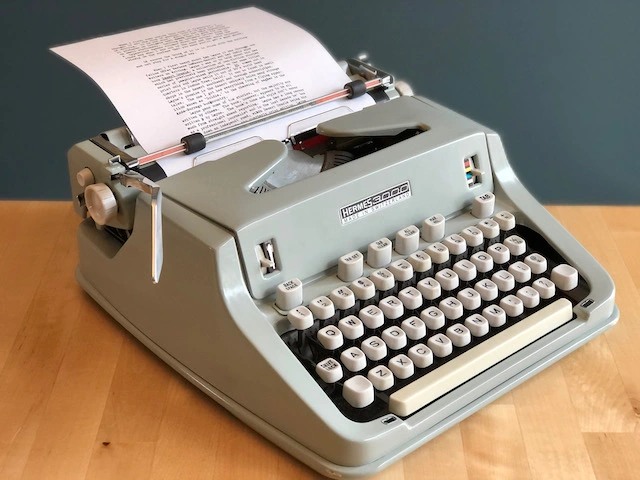

MORDERN MACHINE
a modern machine is defined as any device that uses advanced technology to
make work easier and faster than older methods.
These machines often use electronics and computers to work automatically or with little human effort.
TYPES OF MODERN MACHINE
-
Computers :
These devices are essential for various tasks like processing information, browsing the internet, and learning. They can store large amounts of data and run different software applications to make work easier.
-
ATMs (Automated Teller Machines) :
ATMs are used to perform basic banking tasks, like withdrawing money or checking account balances, without needing a bank teller. They provide convenience by being accessible 24/7.
-
POS (Point of Sale) Machines :
These devices allow businesses to process payments from customers, usually by card. They also help keep track of sales and inventory in real time, streamlining the checkout process.
-
Digital Cameras :
Digital cameras capture high-quality images and videos, replacing traditional film cameras. They store photos electronically, making them easy to share or edit.
-
Smartphones:
Smartphones are versatile devices that combine calling, texting, internet browsing, and a wide range of apps in one. They are powerful tools for both work and personal use.
-
Industrial Machines :
These machines are used in manufacturing to perform tasks such as assembly, packaging, or material handling automatically. They increase efficiency and reduce the need for manual labor.
-
Printers :
Printers are devices that transfer text or images from a computer onto paper. They are widely used in homes, offices, and schools for producing hard copies of digital documents.
-
Scanners :
Scanners are machines that convert physical documents or images into digital files. This process makes it easy to store, share, or edit documents electronically.
-
Photocopiers :
Photocopiers quickly produce duplicate copies of documents, which is essential in offices or schools where many copies are needed regularly. They operate by scanning and reproducing text or images.
-
Microwave Ovens :
Microwave ovens use microwave radiation to heat or cook food quickly. They're a convenient appliance in kitchens, allowing fast reheating or cooking without the need for a stove.

TRADITIONAL MACHINE ( before modern machines)
-
Typewriters – Used for typing documents before computers, requiring manual input for each letter.
-
Manual Cash Registers – Used in shops for recording sales and making change, before POS systems.
-
Film Cameras – Used for capturing photos and videos before digital cameras, with film that needed developing.
-
Basic Mobile Phones – Used for calling and texting before smartphones, with limited features like a phone book.
-
Manual Labor and Steam Engines – Used in factories before industrial machines, powered by human, animal, or steam force.
-
Handwritten Documents and Typewriters – Used for creating and duplicating documents before printers, requiring manual effort for each copy.
-
Carbon Paper – Used for making copies of documents before photocopiers, pressing paper together to create a duplicate.
-
Stoves and Ovens – Used to heat or cook food before microwave ovens, relying on conventional cooking methods.
ADVANTAGES OF MODERN MACHINE
-
Complete works faster and more accurately, saving time.
-
Perform repetitive works without human intervention, reducing labor costs.
-
Offer accuracy, ensuring better results in manufacturing and healthcare.
-
Produce more in less time, boosting overall productivity.
-
Enhance global communication with smartphones and computers.
-
Reduce labor costs and minimize waste through automation.
-
Designed with safety features to reduce workplace accidents.
-
Make daily life more convenient and healthier.
DISADVANTAGES OF MORDERN MACHINE
-
Automation can replace human workers, leading to unemployment.
-
Modern machines, especially computers, are vulnerable to hacking and cyber-attacks.
-
Over-reliance on machines can reduce human skills and decision-making abilities.
-
Storing personal data on machines can lead to breaches of privacy if not properly secured.
-
Modern machines require expensive maintenance and upgrades to remain functional.
-
Manufacturing and disposal of electronic devices can contribute to pollution and waste.
-
Machines can malfunction or experience errors, causing delays or loss of data.
-
Machines may struggle with tasks outside their programmed capabilities or adapt to changes in the environment.
-
Unequal access to modern technology can widen the gap between different social groups.
-
Advanced machines can be complex to operate, requiring specialized knowledge and training.